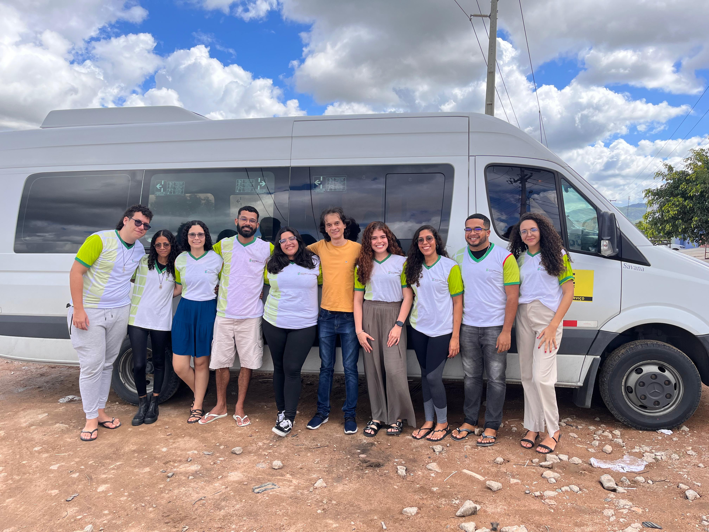
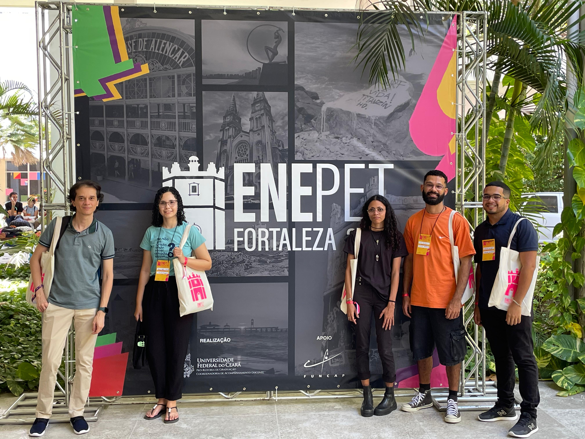
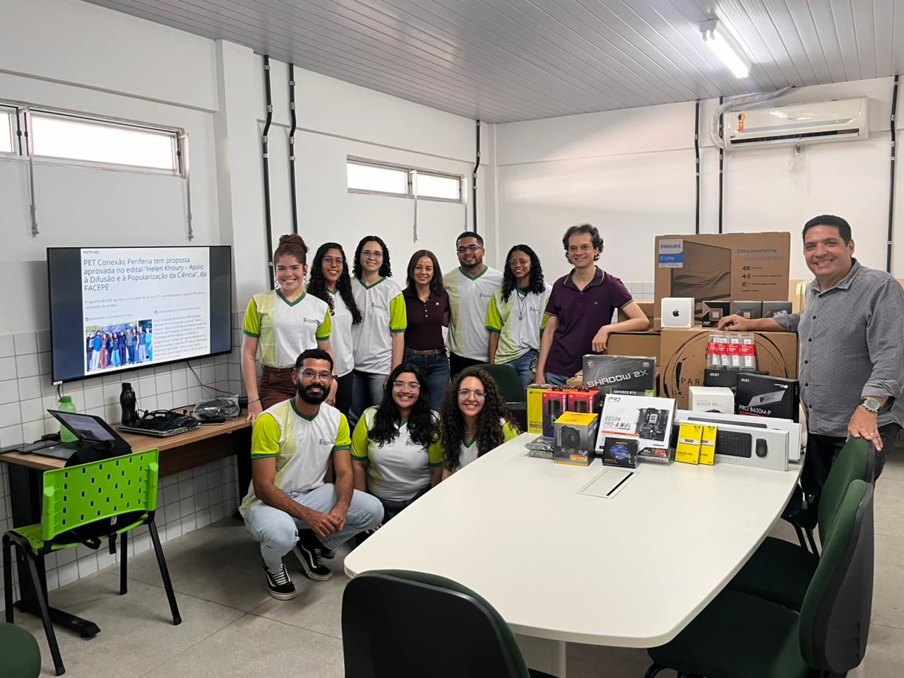
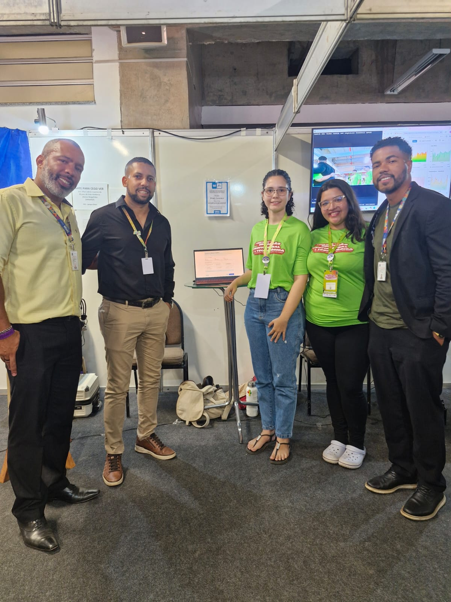
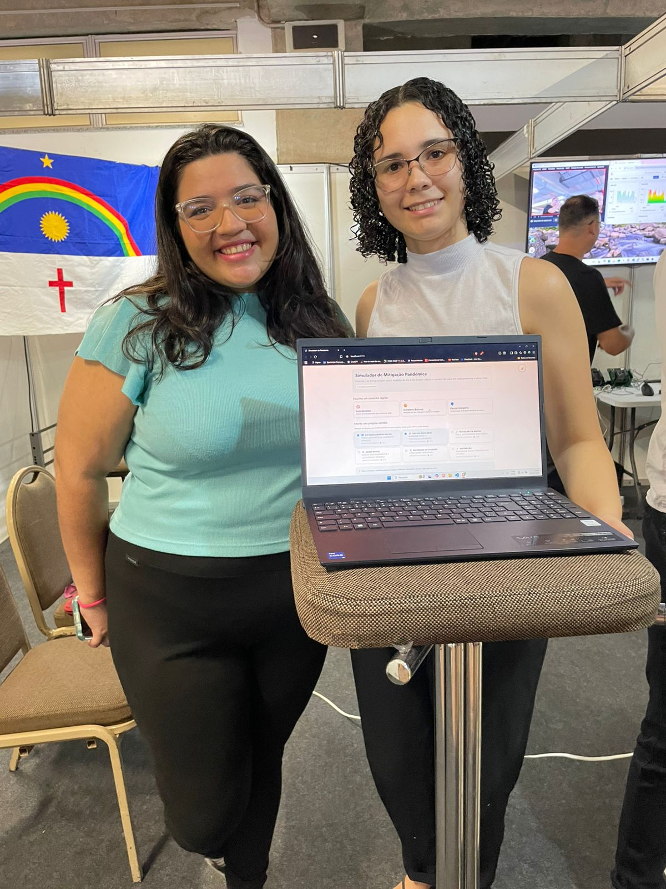
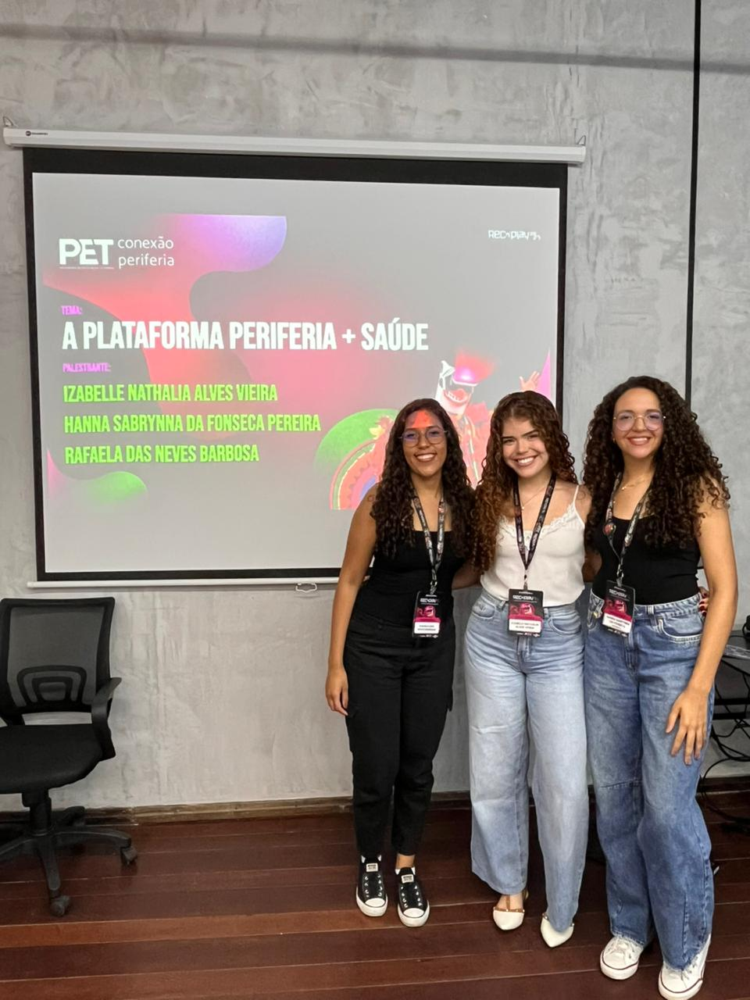
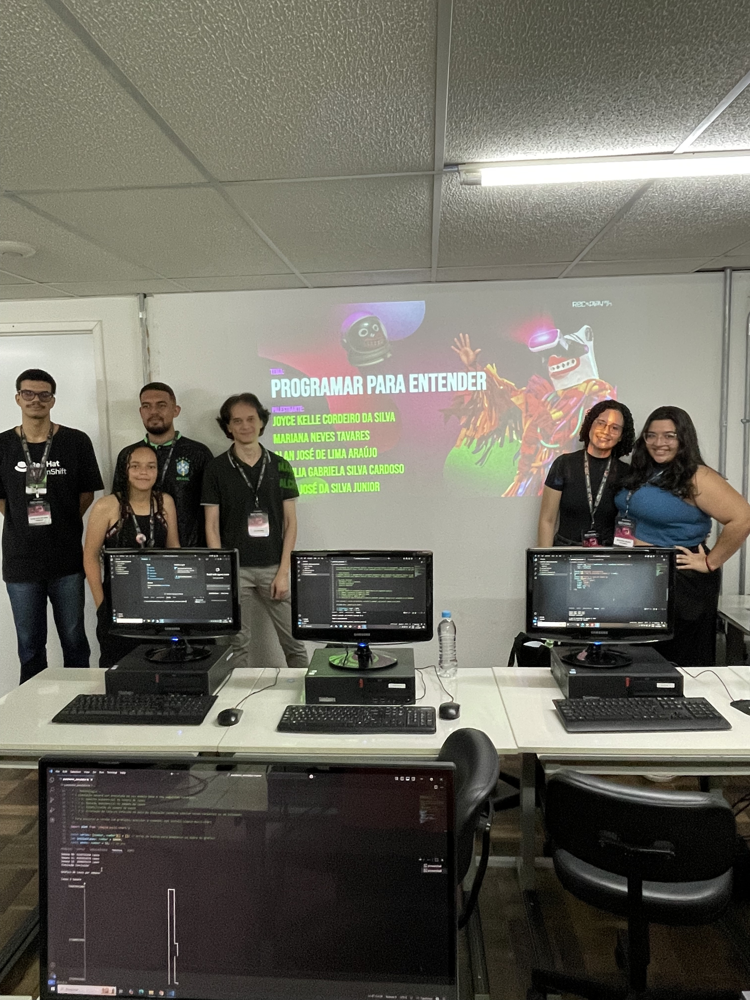

PET Conexão Periferia em ação

Participação no XXVI PET PE 2025
2 resumos expandidos apresentados no PETPE (UNIVASF – Petrolina/PE)

Participação no XXIV ENEPET 2025
1 resumo expandido apresentado no ENEPET (UFC – Fortaleza/CE)

Aprovação no Edital FACEPE nº 22/2025
Proposta: “Periferia faz Ciência: oficinas de simulações de pandemias e epidemias como mecanismo para a disseminação e democratização da prática científica pela população do litoral norte de Pernambuco”


Participação na 5ª Semana Nacional da Educação Profissional e Tecnológica (SNEPT) 2025
Proposta: "Simulação Computacional de Pandemias como Ferramenta de Popularização da Ciência e Formação Cidadã"


Participação no Rec'n'Play 2025
Apresentações:
- PET Conexão Periferia: O desenvolvimento da plataforma periferia + saúde
- Programar para entender: Simulando pandemias e combatendo a desinformação